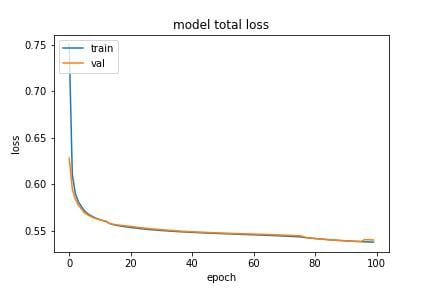
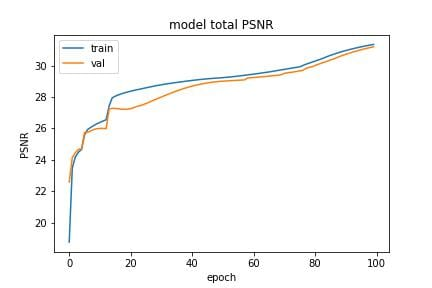
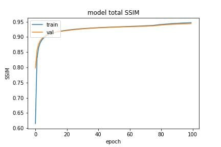

The light disperses into the surroundings, or it gets absorbed by the fragments present in
the airspace. The total amount of fragments in the region is proportional to the scattering
of light. This scattering reduces the clarity and colour in that region. Different particles and
the environment they are in impact the scattering. Such as humidity and particles like
sulphur cause a hazier environment. Most of these particles are present due to air pollution
from industry. Some exist because of the natural world, such as windblown dust and forest
fire. This haze, coupled with smoke, dust and low light condition, makes the haze removal
task particularly difficult. This haze makes visibility extremely difficult for both
humans and computer vision. e.g. the analysis from Wang et al. [1] concluded,
the presence of haze can drastically effects tourist arrival. For better and more
effective accuracy, vision algorithms expect clean, clear, and visible input. Since
real-world places have haze environment tasks like object detection [2], object
segmentation [3] becomes difficult due to a lack of information in captured images.
To get the best out of these algorithms, we need to process real-world data to
have the minimum possible haze and other artefacts. We can fix this via either
pre-processing, post-processing or both. Haze removal could be achievable in two
ways physical and non-physical. The physical method analyses the atmospheric
transmission that degrades the image and regenerates the image by inversing the existing
transmission. The physical-based methods take the path of approximation and
assumption about the prior condition. The non-physical-based techniques solve
this problem through image enhancement. Popular approaches like Histogram
equalization [4], logarithmic transformation [5], various filters [6–9] in the frequency
domain and Retinex theory [10] are very robust and achieve remarkable results.
These methods are not robust to the change and thus struggle with noise, different
exposure settings and artefacts in the image. The core computer vision task needs
clean and visible input to give a decent performance. Tasks like object detection,
segmentation, and depth estimation deal with real-world data, these tasks struggle in
performance when the images are hazy. We present a simple and miniature method to
pre-process the input image, such that the performance of these tasks will improve.
Recently, Deep learning-based methods perform exceptionally on the image enhancement
task. These methods provide robust solutions to haze removal better than the quaint
algorithm results. In this paper, we remove haze from both indoor and outdoor images. Our
methods fix the different difficulties in the real world of hazy images like noise, challenging
light and image artefacts. We constructed U-Net-like CNN [11] with an encoder,
bottleneck and decoder. Each of these consists of blocks of layers carefully designed for
haze removal. These blocks consist of downsampling and upsampling layers with
skip connections. We used a combination of loss functions to enhance different
aspects of the images like the structural and perceptual quality of the image.
The outline of the paper is summarized as follows. In this Section 1, we described haze and
the difficulties faced in the haze removal process. Also, we explained the goal of the
suggested method. In Section 2, we will discuss
existing literature, the popular methods and
their approach to solving the haze removal problem. The proposed technique and details
about the model architecture and implementation are in Section 3. Training structure and
comparison of our results with different methods are illustrated Section 4. Finally in Section
6, we concluded the findings and summarised our approach
of single image haze
removal.
We can categorise haze removal tasks into prior-knowledge and learning-based
techniques. The prior-knowledge approaches take advantage of statistical hypotheses. In
opposition, learning-based methods learn the nonlinear mapping in the haze-free and
between the given haze-full image. This section, we will embrace the difference
between these two techniques in detail. In the prior-based algorithms [9, 12], physical
assumptions such as atmospheric scattering technique (ATM) [13–15] and
statistical
hypotheses are used to expect the outcome to be a haze-free image. In the prior-based
methods [9, 12, 16–18], authors investigate the factors affecting the image and
minimize those factors to get a haze-free outcome. The transmission map with colour
attenuation prior is calculated to manipulate the discrepancy between RGB channels.
However, these techniques only reach sub-optimal performance in haze removal. Other
approaches include polarized filters, multiview images of the common scenery and
prior-based hazy methods. He et al. demonstrated dark channels prior (DHCP) [19] to
improve visibility in haze-full images. This approach struggles with edge structure
and undergoes a halo effect [20]. Further approaches Lai et al. [4]
proposed two
prior-based transmission maps for the hazy scene, a multi-scale retinex-based
algorithm [21] to estimate luminous detail in the image, colour attenuation prior
(CAP) [12], and an HSV colourspace method to extract haze-related features.
In learning-based methods, the first few techniques estimated transmission maps using
end-to-end CNN like Cai et al.[20] and Ren et al. [22] Zhang et al.
[23] suggested an
approach to get transmission maps and atmospheric light with atmospheric scattering to
estimate haze-free images. A variety of methods used CNN [2, 18, 20, 24] to get a direct
clean haze-free image. The result of the investigation from Chen et al. [25] using dilated
convolutional for haze-free image reconstruction showed better unit performance than the
previous existing methods.The approaches like AOD-net [26] analyzes the contradiction
between the quaint atmospheric models and the haze removal techniques. Later Swami et al.
[27] proposed conditional GAN to remove haze from the degraded hazy images. Now,
researchers [28, 29] use an unpaired training approach for a
variety of computer
vision tasks. Various methods used this unpaired training technique some even
used this for motion object segmentation [3]. Another application-specific task
on haze removal includes Chen et al. [30] proposed nonuniform remote sensing
technique for removing the haze. Zheng et al. [31] performed dehazing on a Ultra-high
definition image using multi-guided bilateral learning. Illumination adjustment for
haze [32], smoke and fire removal from a single input image. VRHI [33] is used
for visibility restoration in hazy images by incorporating haze density model.
In GAN-based techniques [34], BPPnet [35] used a pyramid-based network that
gives state-of-the-art results with only 20 pairs of training images. EDN-GTM [36]
use dark channel prior in their approach with a guided transmission map that
outperforms the traditional methodology. DW-GAN [37] used discrete wavelet transform
with two-branch GAN. RI-GAN [38] with residual inception modules in both
generator and discriminator. All of the above-mentioned methods works decently on
haze removal task, but the GANs are computationally expensive and difficult to
implement. Therefore, our model is CNN-based, easy to implement and computationally
inexpensive.
We compared RGB and YCbCr colourspace as training inputs to our neural network. We determined that the YCbCr image representation works very well on image haze removal. The YCbCr colourspace is mainly used in image enhancement and image super-resolution tasks because it represents information better than RGB and is noise free compared to RGB colourspace. Recently, YCbCr image representation has shown exceptional outcomes in haze removal tasks. As Bianco et al. [39] showed in their experiment, the mean squared error (MSE) (4) is qualitatively better in YCbCr colourspace than RGB because atmospheric illumination in hazy images affects more Y channel more. A better MSE score in YCbCr colourspace is the direct reason for better peak-signal-to-noise ratio (PSNR). Therefore to evaluate the methodology, we will be using YCbCr colourspace as our primary image input representation.
We prioritise performance, efficiency and simple architecture for our neural network model.
The proposed technique is miniature and straightforward to conduct yet achieves better
performance than the traditional methodology. We experimented with different approaches
that will advance our expectations from our model. The proposed architecture is a
U-Net-based formation of encoder, bottleneck and decoder. Each of the sub-formations
is a set of cautiously selected blocks of layers that meet close to our prioritise.
Our end-to-end network’s encoder and decoder are composed of convolutional blocks. Each
of these blocks contains manually designed layers. Such as the encoder is constructed of
downsampling layers and convolutional layers with pre-defined pooling. Whereas
the decoder is created using upsampling layers and convolutional layers. These
blocks coupled with the skip connection make our network end-to-end. We avoided
the batch-normalization layer because of its poor performance on small batches,
expensive computation and dissimilarity between training and testing. We used
weight normalization because of is computationally inexpensive and gives better
weight initialization. We used parametric PReLU as our activation function since
PReLU’s learn parameters on how activation should be permitted for negative
values.The bottleneck is created with only convolutional layers with fixed weights and
biases.
As outlined in Fig (1),
the encoder is stacked with multiple convolutional blocks. Each of
these blocks contains a set of convolutional layers, average pooling, max pooling, weight
normalization and parametric ReLU. We downsampled the input by half i.e. the stride of
two and raise the weight by a factor of two. The feature extracted in the block passed to the
next block till they reach the bottleneck. The encoder is directly connected to the decoder
via skip connection. Such that, the initially learned parameter could directly transfer to the
decoder. The bottleneck is the only phase without any skip connection and sampling. The
input and output size of this phase is equal and the weight is the same for each block.
The decoder is composed of downsampling convolutional blocks. The decoder has the same
set of layers as the encoder except for the downsampling layers such as average pooling and
max pooling decoder has an upsampling layer. we used stride two with decreasing weight by
a factor of two. For upsampling, we used bilinear interpolation. The decoder is directly
connected to encode via skip connections from which the decoder gets learned parameters
from an encoder.
The loss function associated with the trained model is stated as follows:
|
|
(1) |
Frequency-domain loss [43] () transforms output images into frequency signals. To increase sharpness and reduced noise and other artifacts. Let , dimension of images and , where is scaling factor FFT stands for Fast Fourier Transform of Image . The Fast Fourier transform is
|
|
(2) |
fast algorithm to compute i.e. Discrete Fourier Transform. By transforming images into frequency, we can learn to see the differences in higher dimensional region. By transforming image signals into a frequency domain for Fourier transform such that we can enhance the higher frequencies while keeping lower frequencies which will sharpen the images.
Smooth loss () is amalgamation of and losses, when the respective absolute error is high it behaves like and when the absolute error is close to zero it behaves like an . We used Huber loss [44] as smooth loss because of its similarity
|
|
(3) |
Mean Square Error (MSE) is used as
loss function as follows:
|
|
(4) |
Where, is predicted image and is ground-truth image.
PSNR is used as a metric for image quality. The higher value indicates better
quality. The unit of PSNR is dB.
We calcuate the PSNR as following equation.
|
|
(5) |
Where, is predicted image based on MSE (4).
Structural Similarity (SSIM) is used as a metric to improve the structural accuracy of predicted output.
|
|
(6) |
whereas, the pixel sample mean of x , the pixel sample mean of y, and the change in variance of x, can effect the variance of y, which is associated with the covariance of x,
Structural Similarity loss () is used retain structural similarity of reconstructed image we minimized SSIM loss. The loss function is stated as below,
|
|
(7) |
where as SSIM is from (6)
| Metric | Berman et al. [16] | AOD-Net [26] | BPPNet [35] | EDN-GTM [36] | Our |
| PSNR (dB) | 14.12 | 13.98 | 22.56 | 22.90 | 22.54 |
| SSIM | 0.6537 | 0.7323 | 0.8994 | 0.8270 | 0.8702 |
| Metric | Berman et al. [16] | AOD-Net [26] | BPPNet [35] | EDN-GTM [36] | Our |
| PSNR (dB) | 15.98 | 15.03 | 24.27 | 23.46 | 23.02 |
| SSIM | 0.5894 | 0.5385 | 0.8919 | 0.8198 | 0.8034 |
To train the model, we incorporated two different datasets Realistic Single Image Dehazing (RESIDE) dataset [45] with total number 18,200 images for training are consider and additionally the Real-world Video Dehazing dataset (REVIDE-indoor) [46] with a total of 1697 images for training and 282 for testing. To infer the proposed model, we used various benchmarking datasets like Dense haze [41], NH haze [47], I haze [42] and O haze [40]. We split the training dataset into 80% training and 20% validation. In pre-processing, we resize input images into and change the colour space to YCbCr. We used batch size for all of the images.
We used AdamW [48] rather than Adam optimizer, as we used weight normalization weight decay from AdamW will be a reasonable regularizer. The weights are initialized in uniform distribution as proposed by He et al. [49] initial biases were set to zero. The learning rate we consider for training the model is 0.0001 and the weight decay is . If the loss doesn’t change for 7 epochs, then dynamically the learning rate will be reduced by a factor of 2.
After testing both (3) and losses (4), we choose as our primary loss. The final loss function includes loss, Frequency domain loss (2), and structural similarity loss (7), and metrics include PSNR (5) and SSIM (6) as shown in Fig (3).
|  |  |  |
|
a)
Loss
|
b)
PSNR
|
c)
SSIM
|
We computed metrics PSNR (5) and SSIM (6) on various real-world and synthetic images. We presented our results in Table. (1) and Table. (2) with a detail analysis with existing methods.
| Metric | Berman et al. [16] | AOD-Net [26] | BPPNet [35] | EDN-GTM [36] | Our |
| PSNR (dB) | 13.18 | 13.14 | 17.01 | 15.43 | 17.60 |
| SSIM | 0.358 | 0.414 | 0.613 | 0.520 | 0.716 |
| Metric | He et al. [19] | EDN-GTM [36] | Our | ||
| PSNR (dB) | 16.62 |
15.40
|
20.24 | 18.93 | |
| SSIM | 0.523 |
0.569
|
0.718 | 0.746 | |
As exhibited in Table (1), the model performs near state-of-the-art in both PSNR and SSIM metrics on both datasetes [40, 42]. Whereas from Table (2), our model outperforms existing methods in both PSNR and SSIM with the Dense-haze dataset [41]. For the NH-Haze [47] dataset, our model outperforms existing models in SSIM and the PSNR difference between our model and the existing model is 1.31dB. In both cases, EDN-GTM [36] struggles in the SSIM metric, but our method gives a precise SSIM score because of the Structural similarity loss (7), see results in Fig (2).
We conducted an ablation study on I-Haze, O-Haze, Dense-Haze and NH-haze datasets. We evaluated ablation with loss components in Section 5.1 and colourspace image representation in training images in Section 5.2.
In section 3.4, we used three types of losses to train our neural network. In this section, we will assess the result if we change the loss function with , i.e. Huber loss. Our observation is presented in Table (3), which shows the qualitative comparison between these losses.
| Metric | I-Haze [42] | O-Haze [40] | Dense-Haze [41] | NH-Haze [47] |
| PSNR (dB) | 21.41 | 21.24 | 17.44 | 17.78 |
| SSIM | 0.843 | 0.779 | 0.697 | 0.713 |
| Metric | I-Haze [42] | O-Haze [40] | Dense-Haze [41] | NH-Haze [47] |
| PSNR (dB) | 22.54 | 23.02 | 17.60 | 18.93 |
| SSIM | 0.870 | 0.803 | 0.716 | 0.746 |
In Section 3.1, we discussed the use of YCbCr colourspace over RGB. In this section, we will examine the qualitative results of both colourspace image representations for training the proposed network. Our findings reveal that the YCbCr colourspace images give slightly better results than the RGB colourspace images in most of the datasets. On some input images, RGB-based images were perceptually better than the YCbCr. Also, the metric-wise difference is diminutive for all datasets.
We presented the coherent architecture train on sufficiently large and diverse data that can give near state-of-the-art results on indoor, outdoor, non-homogenous, dense and synthetic haze environments on qualitative metrics PSNR and SSIM. Our model gives structurally enhanced output on poorly visible input images. We used a combination of loss functions to generate a haze-free image without colour degradation, noise and structural loss. Our method demonstrated by choosing adequate qualitative and quantitative data miniature and straightforward network can effective as the existing methods. In future, our model can be used to get haze-free images for vision tasks such as object detection, segmentation and human action recognition if needed. Also, we will improve our model on low-light hazy images and colour restoration from densely hazy images.
[1] Wang, L., Zhou, X., Lu, M., Cui, Z.: Impacts of haze weather on tourist arrivals and destination preference: Analysis based on Baidu Index of 73 scenic spots in Beijing, China. Journal of Cleaner Production 273, 122887 (2020) https://doi.org/10.1016/j.jclepro.2020.122887
[2] Tran, L.-A., Moon, S., Park, D.-C.: A Novel Encoder-Decoder Network with Guided Transmission Map for Single Image Dehazing. Technical report (February 2022). Publication Title: arXiv e-prints ADS Bibcode: 2022arXiv220204757T Type: article. https://ui.adsabs.harvard.edu/abs/2022arXiv220204757T Accessed 2022-10-13
[3] Patil, P.W., Murala, S.: MSFgNet: A Novel Compact End-to-End Deep Network for Moving Object Detection. IEEE Transactions on Intelligent Transportation Systems 20(11), 4066–4077 (2019) https://doi.org/10.1109/TITS.2018.2880096
[4] Lai, Y.-H., Chen, Y.-L., Chiou, C.-J., Hsu, C.-T.: Single-Image Dehazing via Optimal Transmission Map Under Scene Priors. IEEE Transactions on Circuits and Systems for Video Technology 25(1), 1–14 (2015) https://doi.org/10.1109/TCSVT.2014.2329381
[5] Cozman, F., Krotkov, E.: Depth from scattering. In: Proceedings of IEEE Computer Society Conference on Computer Vision and Pattern Recognition, pp. 801–806 (1997). https://doi.org/10.1109/CVPR.1997.609419
[6] Huang, S.-C., Chen, B.-H., Wang, W.-J.: Visibility Restoration of Single Hazy Images Captured in Real-World Weather Conditions. IEEE Transactions on Circuits and Systems for Video Technology 24(10), 1814–1824 (2014) https://doi.org/10.1109/TCSVT.2014.2317854
[7] Shwartz, S., Namer, E., Schechner, Y.Y.: Blind Haze Separation. In: IEEE Computer Society Conference on Computer Vision and Pattern Recognition (CVPR’), vol. 2, pp. 1984–1991 (2006). https://doi.org/10.1109/CVPR.2006.71
[8] Schechner, Y.Y., Narasimhan, S.G., Nayar, S.K.: Instant dehazing of images using polarization. In: Proceedings of the 2001 IEEE Computer Society Conference on Computer Vision and Pattern Recognition. CVPR 2001, vol. 1, p. (2001). https://doi.org/10.1109/CVPR.2001.990493
[9] Zhu, Q., Mai, J., Shao, L.: A fast single image haze removal algorithm using color attenuation prior. IEEE transactions on image processing 24(11), 3522–3533 (2015). Publisher: IEEE
[10] Parthasarathy, S., Sankaran, P.: A retinex based haze removal method. In: 2012 IEEE 7th International Conference on Industrial and Information Systems (ICIIS), pp. 1–6 (2012). https://doi.org/10.1109/ICIInfS.2012.6304767
[11] Ronneberger, O., Fischer, P., Brox, T.: U-Net: Convolutional Networks for Biomedical Image Segmentation. arXiv (2015). https://doi.org/10.48550/ARXIV.1505.04597 . https://arxiv.org/abs/1505.04597
[12] Wang, Q., Zhao, L., Tang, G., Zhao, H., Zhang, X.: Single-Image Dehazing Using Color Attenuation Prior Based on Haze-Lines. In: 2019 IEEE International Conference on Big Data (Big Data), pp. 5080–5087 (2019). https://doi.org/10.1109/BigData47090.2019.9005603
[13] McCartney, E.J.: Optics of the atmosphere: scattering by molecules and particles. New York (1976)
[14] Bai, L., Wu, Y., Xie, J., Wen, P.: Real Time Image Haze Removal on Multi-core DSP. Procedia Engineering 99, 244–252 (2015) https://doi.org/10.1016/j.proeng.2014.12.532
[15] Wang, A., Wang, W., Liu, J., Gu, N.: AIPNet: Image-to-Image Single Image Dehazing With Atmospheric Illumination Prior. IEEE Transactions on Image Processing 28(1), 381–393 (2019) https://doi.org/10.1109/TIP.2018.2868567
[16] Berman, D., Treibitz, T., Avidan, S.: Non-local image dehazing. In: 2016 IEEE Conference on Computer Vision and Pattern Recognition (CVPR), pp. 1674–1682 (2016). https://doi.org/10.1109/CVPR.2016.185
[17] Tan, R.T.: Visibility in bad weather from a single image. In: 2008 IEEE Conference on Computer Vision and Pattern Recognition, pp. 1–8 (2008). https://doi.org/10.1109/CVPR.2008.4587643
[18] Tang, K., Yang, J., Wang, J.: Investigating haze-relevant features in a learning framework for image dehazing. In: Proceedings of the IEEE Conference on Computer Vision and Pattern Recognition, pp. 2995–3000 (2014)
[19] He, K., Sun, J., Tang, X.: Single Image Haze Removal Using Dark Channel Prior. IEEE Transactions on Pattern Analysis and Machine Intelligence 33(12), 2341–2353 (2011) https://doi.org/10.1109/TPAMI.2010.168
[20] Cai, B., Xu, X., Jia, K., Qing, C., Tao, D.: DehazeNet: An End-to-End System for Single Image Haze Removal. IEEE Transactions on Image Processing 25(11), 5187–5198 (2016) https://doi.org/10.1109/TIP.2016.2598681
[21] Wang, J., Lu, K., Xue, J., He, N., Shao, L.: Single Image Dehazing Based on the Physical Model and MSRCR Algorithm. IEEE Transactions on Circuits and Systems for Video Technology 28(9), 2190–2199 (2018) https://doi.org/10.1109/TCSVT.2017.2728822
[22] Ren, W., Pan, J., Zhang, H., Cao, X., Yang, M.-H.: Single Image Dehazing via Multi-scale Convolutional Neural Networks with Holistic Edges. International Journal of Computer Vision 128(1), 240–259 (2020) https://doi.org/10.1007/s11263-019-01235-8
[23] Zhang, H., Patel, V.M.: Densely Connected Pyramid Dehazing Network. arXiv (2018). https://doi.org/10.48550/ARXIV.1803.08396 . https://arxiv.org/abs/1803.08396
[24] Tang, G., Zhao, L., Jiang, R., Zhang, X.: Single Image Dehazing via Lightweight Multi-scale Networks. In: 2019 IEEE International Conference on Big Data (Big Data), pp. 5062–5069 (2019). https://doi.org/10.1109/BigData47090.2019.9006075
[25] Chen, D., He, M., Fan, Q., Liao, J., Zhang, L., Hou, D., Yuan, L., Hua, G.: Gated context aggregation network for image dehazing and deraining. In: 2019 IEEE Winter Conference on Applications of Computer Vision (WACV), pp. 1375–1383 (2019)
[26] Li, B., Peng, X., Wang, Z., Xu, J., Feng, D.: AOD-Net: All-in-One Dehazing Network. In: 2017 IEEE International Conference on Computer Vision (ICCV), pp. 4780–4788. IEEE, Venice (2017). https://doi.org/10.1109/ICCV.2017.511 . http://H.Bieeexplore.H.Bieee.H.Borg/H.Bdocument/H.B8237773/H.B Accessed 2022-10-13
[27] Swami, K., Das, S.K.: CANDY: Conditional Adversarial Networks based End-to-End System for Single Image Haze Removal. In: 2018 24th International Conference on Pattern Recognition (ICPR), pp. 3061–3067 (2018). https://doi.org/10.1109/ICPR.2018.8545522
[28] Dudhane, A., Murala, S.: CDNet: Single Image De-Hazing Using Unpaired Adversarial Training. In: 2019 IEEE Winter Conference on Applications of Computer Vision (WACV), pp. 1147–1155 (2019). https://doi.org/10.1109/WACV.2019.00127
[29] Engin, D., Genc, A., Ekenel, H.K.: Cycle-Dehaze: Enhanced CycleGAN for Single Image Dehazing. In: 2018 IEEE/CVF Conference on Computer Vision and Pattern Recognition Workshops (CVPRW), pp. 938–9388 (2018). https://doi.org/10.1109/CVPRW.2018.00127
[30] Chen, Z., Li, Q., Feng, H., Xu, Z., Chen, Y.: Nonuniformly Dehaze Network for Visible Remote Sensing Images. In: 2022 IEEE/CVF Conference on Computer Vision and Pattern Recognition Workshops (CVPRW), pp. 446–455 (2022). https://doi.org/10.1109/CVPRW56347.2022.00060
[31] Zheng, Z., Ren, W., Cao, X., Hu, X., Wang, T., Song, F., Jia, X.: Ultra-High-Definition Image Dehazing via Multi-Guided Bilateral Learning. In: Proceedings of the IEEE/CVF Conference on Computer Vision and Pattern Recognition (CVPR), pp. 16185–16194 (2021)
[32] Wang, C., Hu, J., Luo, X., Kwan, M.-P., Chen, W., Wang, H.: Color-Dense Illumination Adjustment Network for Removing Haze and Smoke from Fire Scenario Images. Sensors (Basel, Switzerland) 22(3), 911 (2022) https://doi.org/10.3390/s22030911 . Accessed 2022-10-13
[33] Ju, M., Chen, C., Liu, J., Chen, K., Zhang, D.: VRHI: Visibility Restoration for Hazy Images Using a Haze Density Model. In: Proceedings of the IEEE/CVF Conference on Computer Vision and Pattern Recognition (CVPR) Workshops, pp. 897–904 (2021)
[34] Chen, S., Chen, Y., Qu, Y., Huang, J., Hong, M.: Multi-Scale Adaptive Dehazing Network. In: 2019 IEEE/CVF Conference on Computer Vision and Pattern Recognition Workshops (CVPRW), pp. 2051–2059 (2019). https://doi.org/10.1109/CVPRW.2019.00257
[35] Singh, A., Bhave, A., Prasad, D.K.: Single image dehazing for a variety of haze scenarios using back projected pyramid network. arXiv. arXiv:2008.06713 [cs, eess] version: 1 (2020). https://doi.org/10.48550/arXiv.2008.06713 . http://arxiv.org/abs/2008.06713 Accessed 2022-10-13
[36] Tran, L.-A., Moon, S., Park, D.-C.: A Novel Encoder-Decoder Network with Guided Transmission Map for Single Image Dehazing. arXiv. arXiv:2202.04757 [cs] version: 1 (2022). https://doi.org/10.48550/arXiv.2202.04757 . http://arxiv.org/abs/2202.04757 Accessed 2022-10-13
[37] Fu, M., Liu, H., Yu, Y., Chen, J., Wang, K.: DW-GAN: A Discrete Wavelet Transform GAN for NonHomogeneous Dehazing. In: 2021 IEEE/CVF Conference on Computer Vision and Pattern Recognition Workshops (CVPRW), pp. 203–212. IEEE, Nashville, TN, USA (2021). https://doi.org/10.1109/CVPRW53098.2021.00029 . https://H.Bieeexplore.H.Bieee.H.Borg/H.Bdocument/H.B9523134/H.B Accessed 2022-10-13
[38] Dudhane, A., Aulakh, H.S., Murala, S.: RI-GAN: An End-To-End Network for Single Image Haze Removal. In: 2019 IEEE/CVF Conference on Computer Vision and Pattern Recognition Workshops (CVPRW), pp. 2014–2023 (2019). https://doi.org/10.1109/CVPRW.2019.00253
[39] Bianco, S., Celona, L., Piccoli, F., Schettini, R.: High-Resolution Single Image Dehazing Using Encoder-Decoder Architecture. In: 2019 IEEE/CVF Conference on Computer Vision and Pattern Recognition Workshops (CVPRW), pp. 1927–1935. IEEE, Long Beach, CA, USA (2019). https://doi.org/10.1109/CVPRW.2019.00244 . https://H.Bieeexplore.H.Bieee.H.Borg/H.Bdocument/H.B9025545/H.B Accessed 2022-10-13
[40] Ancuti, C.O., Ancuti, C., Timofte, R., Vleeschouwer, C.D.: O-HAZE: a dehazing benchmark with real hazy and haze-free outdoor images. In: IEEE Conference on Computer Vision and Pattern Recognition, NTIRE Workshop. NTIRE CVPR’18 (2018). event-place: Salt Lake City, Utah, USA
[41] Ancuti, C.O., Ancuti, C., Sbert, M., Timofte, R.: Dense-haze: A benchmark for image dehazing with dense-haze and haze-free images. In: 2019 IEEE International Conference on Image Processing (ICIP), pp. 1014–1018 (2019). IEEE
[42] Ancuti, C.O., Ancuti, C., Timofte, R., Vleeschouwer, C.D.: I-HAZE: a dehazing benchmark with real hazy and haze-free indoor images. In: arXiv:1804.05091v1 (2018)
[43] Yadav, O., Ghosal, K., Lutz, S., Smolic, A.: Frequency-domain loss function for deep exposure correction of dark images. Signal, Image and Video Processing 15(8), 1829–1836 (2021) https://doi.org/10.1007/s11760-021-01915-4 . Publisher: Springer Science and Business Media LLC
[44] Huber, P.J.: Robust Estimation of a Location Parameter. The Annals of Mathematical Statistics 35(1), 73–101 (1964). Publisher: Institute of Mathematical Statistics. Accessed 2022-09-26
[45] Li, B., Ren, W., Fu, D., Tao, D., Feng, D., Zeng, W., Wang, Z.: Benchmarking Single-Image Dehazing and Beyond. IEEE Transactions on Image Processing 28(1), 492–505 (2019). Publisher: IEEE
[46] Zhang, X., Dong, H., Pan, J., Zhu, C., Tai, Y., Wang, C., Li, J., Huang, F., Wang, F.: Learning to restore hazy video: A new real-world dataset and a new method. In: Proceedings of the IEEE/CVF Conference on Computer Vision and Pattern Recognition, pp. 9239–9248 (2021)
[47] Ancuti, C.O., Ancuti, C., Timofte, R.: Nh-haze: An image dehazing benchmark with non-homogeneous hazy and haze-free images. In: Proceedings of the IEEE/CVF Conference on Computer Vision and Pattern Recognition Workshops, pp. 444–445 (2020)
[48] Loshchilov, I., Hutter, F.: Decoupled weight decay regularization. arXiv preprint arXiv:1711.05101 (2017)
[49] He, K., Zhang, X., Ren, S., Sun, J.: Delving deep into rectifiers: Surpassing human-level performance on imagenet classification. In: Proceedings of the IEEE International Conference on Computer Vision, pp. 1026–1034 (2015)